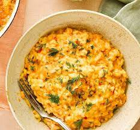

Risotto Recipe

Description
making a beautiful risotto is so easy! all it
takes is a little love and care and this base recipe.
Ingredients
- 1.1 litres of chicken stock
- 1 large onion
- 2 cloves of garlic
- 1/2 head of celery
- 90g parmesan cheese
- 2 tbps olive oil
- unsalted butter
- 400g risotto rice
- 2 wine glasses of dry white wine
Steps
- heat the stock and chop celery, onion and garlic into it
and grate the cheese
- in seperate a pan heat the oil and butter than add previous ingredients and cook till softened
- add rice and increase heat after 2min add the wine
- add stock and after 15min remove from heat